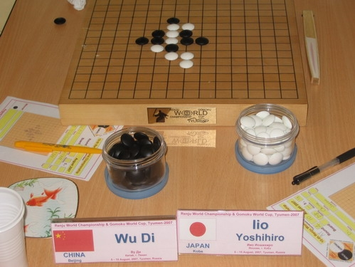

大鱼的扇子
首页
五子棋新闻
#1 大鱼的扇子 作者：酷妞 发表时间：2007-8-16 21:51:54
第4轮Ando抓拍的桌面，也许是大鱼和饭尾的扇子吸引了他。不过他应该不知道，大鱼扇子上画的是金鱼，意喻"拿金牌的鱼"。

The board of Iio and Wu
Published by Ando Meritee
#2 Re:大鱼的扇子 作者：小丸.net 发表时间：2007-8-16 21:54:18
 牛到家了。
牛到家了。
#3 Re:大鱼的扇子 作者：极地剑客 发表时间：2007-8-17 0:00:29

#4 Re:大鱼的扇子 作者：朗星 发表时间：2007-8-17 12:28:21
大鱼的扇子～ 看起来真
看起来真 真淑女
真淑女
#5 Re:Re:大鱼的扇子 作者：黄药师 发表时间：2007-8-17 20:08:31
引用：
原文由 小丸.net 发表于 2007-8-16 21:54:18 :
牛到家了。
康师傅你也准备一把啊！
#6 Re:大鱼的扇子 作者：萨塔 发表时间：2007-8-22 11:07:08
大冷天的还用扇子。。。
#7 Re:大鱼的扇子 作者：啊呆 发表时间：2010-8-11 10:08:47
.......
#8 Re:大鱼的扇子 作者：水月 发表时间：2010-8-11 10:37:26
没事别挖坟
#9 Re:大鱼的扇子 作者：萧翎 发表时间：2010-8-14 22:57:10
我记得那次比赛大鱼感冒了的？